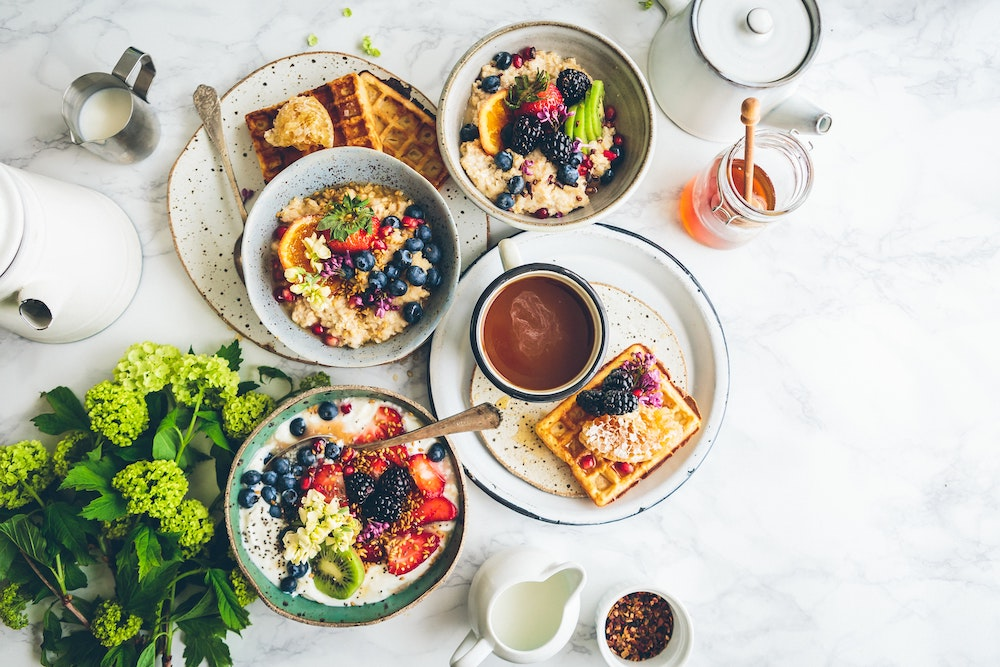
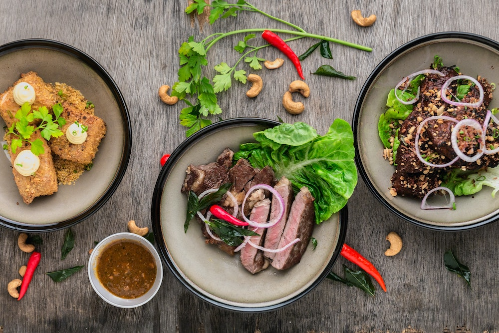
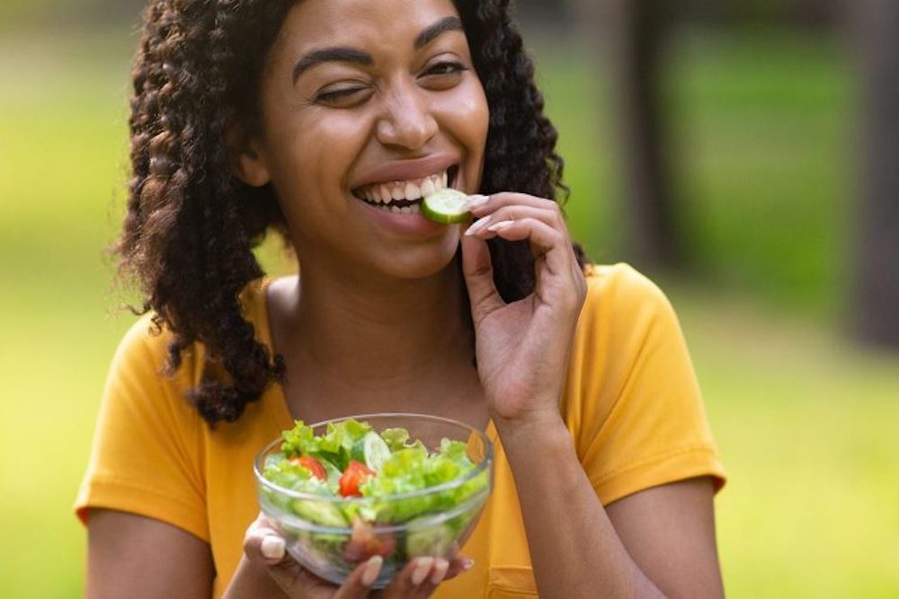
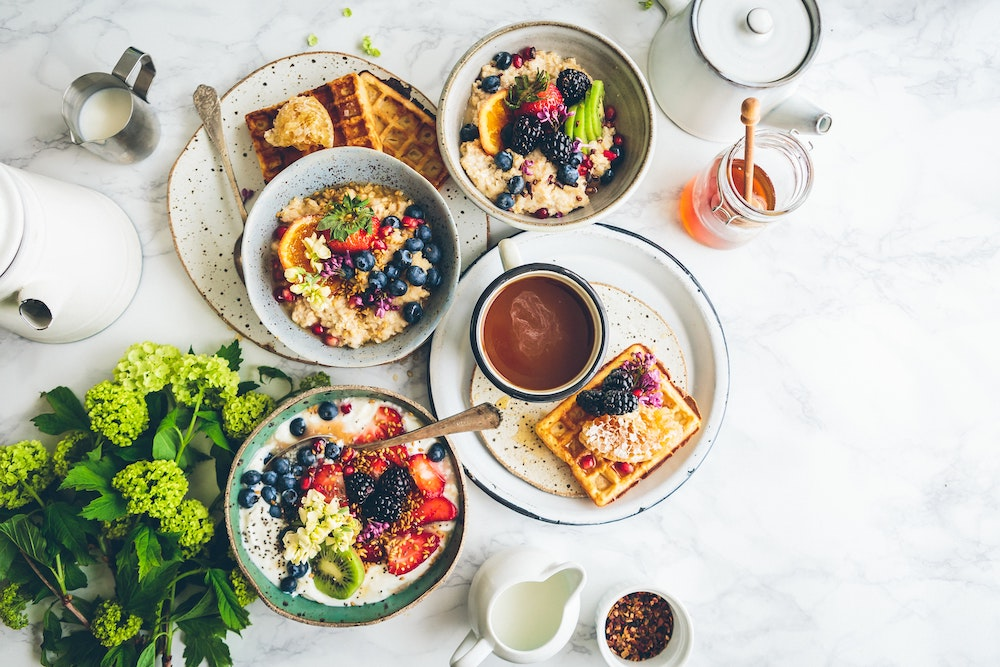
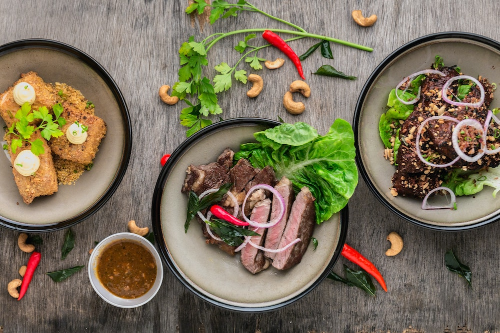
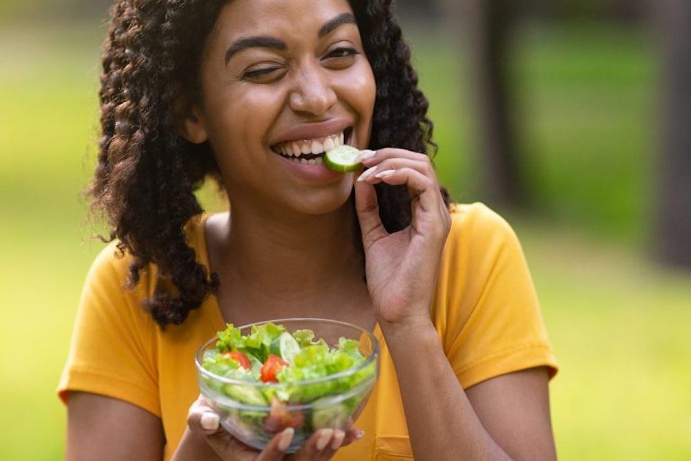

Websites
- www.eatthis.com's mindful eating tips
- A blog describing types of eaters
- Am I Hungry? -- The Mindful Eating Cycle (super helpful!)
- Test youself: EATING CYCLE ASSESSMENT
Other Resources for getting help
- 8 Steps to Mindful Eating – How to truly pay attention to the food you eat. (Harvard Health Publishing)
- Introduction to Mindful Eating – What it is, the benefits, and how to start. (The Center for Mindful Eating)
- Also, there is some resources from the Center for Mindful Eating (unverified). Starting a Mindful Eating Practice for those wishing to learn more starting a mindful eating practice Community practices for live, guided meditation and mindful eating practice.
These may help mindful eating fit in your everyday life
Podcast: Ram Dass is joined by a young Joseph Goldstein and Jack Kornfield for a meaningful talk about mindfulness and food: link
Book: Mindful Eating: A Guide to Rediscovering a Healthy and Joyful Relationship with Food by Jan Chozen Bays, MD
Book: Savor: Mindful Eating, Mindful Life by Thich Nhat Hahn
Book: Eating the Moment: 141 Mindful Practices to Overcome Overeating One Meal at a Time by Pavel G. Somov
Book: Art of the Inner Meal: The Power of Mindful Practices to Heal Our Food Cravings by Donald Altman
 




